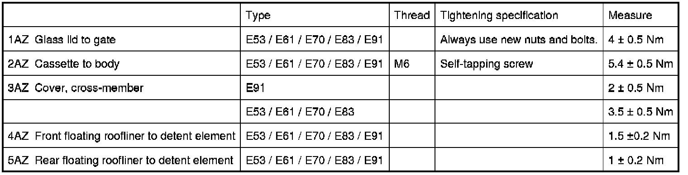

Operation CHARM
: Car repair manuals for everyone.
Home
>>
BMW
>>
2007
>>
X3 3.0si (E83) L6-3.0L (N52K)
>>
Repair and Diagnosis
>>
Body and Frame
>>
Roof and Associated Components
>>
Sunroof / Moonroof
>>
Specifications
>>
54 12 Mechanical Components, Panorama Sunroof
54 12 Mechanical Components, Panorama Sunroof
54 12 Mechanical components, panorama sunroof
